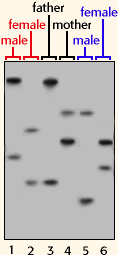
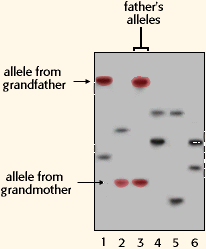
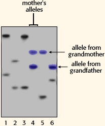

 * Paternal grandparents
* Maternal grandparentsAre the grandparents maternal or paternal?
You already know that maternal parents are your grandparents on your mother's side. Therefore, paternal parents are your grandparents on your father's side.
 Father's alleles Remember, that your mom and your dad each contributed one set of alleles to your genome. Therefore, your grandmother and your grandfather on your father's side each contributed a set of alleles to your father. Notice, highlighted in red and blue, that indeed one allele was contributed from each grandparent to the father. It is important, however, to observe each loci given to make sure that the match is correct.
 Mother's alleles Here again, you will observe that each grandparent contributed one allele to the mother's lane. For accuracy, click on all four loci pictures listed above the questions page to confirm your answer. With this information, you should be able to determine if the grandparents on the autoradiograms are paternal or maternal.
The Biology Project
University of Arizona
Monday, June 2, 1997
Contact the Development Team
http://biology.arizona.edu
All contents copyright © 1996. All rights reserved.